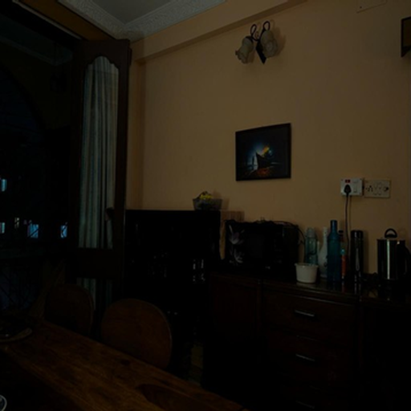

Intensity Control
Using nerfies you can create fun visual effects. This Dolly zoom effect would be impossible without nerfies since it would require going through a wall.




Image-based indoor scene relighting remains challenging due to the complex interplay between cluttered geometry and local illumination, requiring precise modeling of light position, color, and intensity. Existing data-driven methods implicitly learn this relationship via paired multi-illumination datasets. Nevertheless, this data is costly and fails to scale, which is essential for accurate light-source-level control. Conversely, inverse-rendering methods reduce the data dependency by incorporating physical priors; however, they lack the robustness of intrinsic estimation in challenging conditions.
In this paper, we present FreeLit, a paired-free framework for controllable indoor relighting that explicitly manipulates light-source location, color, and intensity. Instead of relying on paired supervision, we construct a physics-guided illumination prior from intrinsic scene properties, generating a structured lightmap along with a pseudo-relit image to guide diffusion-based synthesis. To address instability in intrinsic estimation, especially in low-light scenes, we introduce a relighting-guided intrinsic stabilization strategy that enforces illumination-invariant reflectance through structure-aware distillation and consistency constraints. Furthermore, we propose controllability-oriented evaluation metrics to quantify alignment with user-specified illumination color and intensity. Experimental results demonstrate that FreeLit achieves stable, physically consistent, and controllable relighting, with improved robustness in low-light indoor scenes, without requiring paired supervision.


Using nerfies you can create fun visual effects. This Dolly zoom effect would be impossible without nerfies since it would require going through a wall.
As a byproduct of our method, we can also solve the matting problem by ignoring samples that fall outside of a bounding box during rendering.
We can also animate the scene by interpolating the deformation latent codes of two input frames. Use the slider here to linearly interpolate between the left frame and the right frame.

Start Frame

End Frame